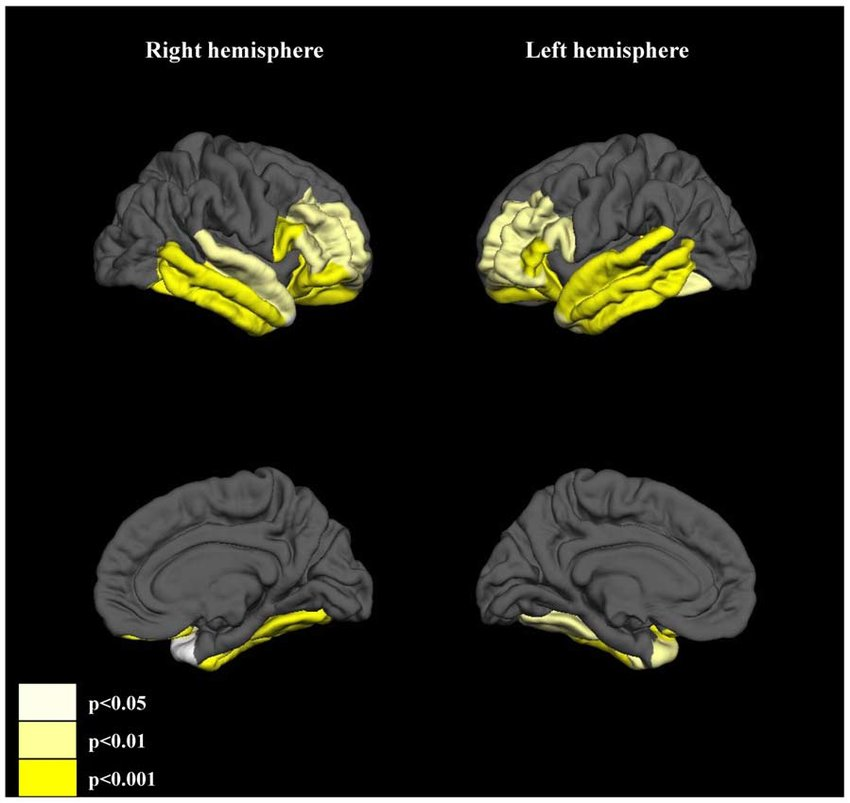

11 신경퇴행적 가설
11.1 신경발달학적 가설과 신경퇴행적 가설
신경퇴행(neurodegeneration)이란 정상적으로 성장한 신경계 구조가 점점 그 구조와 기능을 상실하게 되는 과정을 의미한다. 엄밀한 정의상으로는 신경발달학적 가설과 확연히 구분되지만, 실제로는 구분히 애매한 회색 영역이 있다. 청소년기가 되면 중추신경계의 발달이 종료된다는 고전적인 개념과는 달리 신경계의 성숙은 성인기 초기까지 지속된다.[1] 출생전에 완성되는 신경세포의 생성, 이동, 피질층(cortical layer)의 형성 등과는 달리, 수초화, 가지치기, 신경가소성에 의한 시냅스 재구조화, 뇌에 축적되는 독성 물질의 제거 등은 성인기, 심지어 노년기까지도 지속되며, 이 역시 확장된 신경발달 과정으로 볼 수도 있다.[2] 그러나 후자는 대체로 기능 보존(neuronal housekeeping)에 관련된 문제이며, 기능 보존이 제대로 되지 않으면 퇴화하는 것을 막을 수 없기 때문에 이들을 신경퇴행의 관점에서 보는 것이 일반적이다.
각설하면 신경퇴행이란 없던 것이 생겨나는 발달의 문제가 아니라, 있던 것이 사라지는 붕괴의 문제이다. 크레펠린이 조발성 치매를 기술했을 때 그가 염두에 둔 것은 성인기 초기까지 비교적 정상적으로 성장한 성인이 점차 치매와 유사한 상태로 몰락해가는, 한번 시작되면 돌이킬 수 없는 비가역적 과정이었다. 질병경과를 진단기준의 중심축으로 삼은 것도 이렇게 퇴화되는 양상이 질병의 본질이라고 여겼기 때문이다. 현대에 들어와서도 조현병과 기분 장애는 그 장기적 예후에 있어서 근본적인 차이를 보인다. 물론 만성 양극성 장애 환자 중에도 황폐화에 이르는 경우가 있지만, 황폐화의 비율은 현저히 차이가 난다.[3] 신경퇴행적 과정은 조현병에 독특한 과정인 셈이다.
크레펠린의 시대부터 현재까지, 조현병 발병 이후 점진적으로 대뇌피질이 위축되거나 뇌실이 점점 커지고, 신경세포가 사멸하며, 시냅스가 대폭 줄어드는 등의 소견이 반복적으로 관찰되었다.[4,5] 연구자들은 이러한 뇌구조 변화와 유병기간 사이의 연관성을 통해, 변화가 점진적으로 진행되는 것임을 짐작해왔으며, 최근에는 직접 종적 추적관찰을 통해 조현병이 만성화가 된 이후에도 이러한 변화가 멈추지 않는다는 것을 알게 되었다.[6] 더군다나 이러한 종적 변화는 정신병적 증상이 얼마나 지속되는가와 비례하였으며, 동시에 인지기능의 감소 정도와도 유의한 관련성을 보였다.[7]
물론 동일한 관찰결과들을 신경발달학적 가설의 증거로 삼을 수도 있을 것이다. 구조나 기능의 극적인 변화는 대부분 첫 삽화 혹은 처음 발병 후 몇 년 이내에 일어난다. 이러한 변화들은 태생기에 정상적이지 못한 신경연결망을 형성한 뇌가, 발병 전 과다하게 부여되는 스트레스를 견뎌내지 못하고 무너져 내리기 시작했다는 증거로 여겨진다. 고위험 군을 연구하는 학자들은 이러한 변화들을 고위험군이 발병 군으로 전환되는 예측인자로 삼을 수 있다고 주장한다.[8] 즉 뇌의 퇴행적 변화가 정신병적 증상의 원인이 된다고 주장하는 셈이다.
이와는 반대로 신경퇴행적 가설에서는 지속되는 증상이 이후 뇌 구조/기능이 퇴행되는 과정의 원인이 된다. 이 논리를 따라가면, 첫 삽화를 겪은 환자의 뇌와 재발이 거듭되어 만성화 단계에 이른 조현병 환자의 뇌는 결코 동일하다고 볼 수 없다. 즉 조현병의 병적 과정에는 두가지 측면이 존재한다. 첫째는 발병을 초래하는 병적 과정이요, 두번째는 일단 발병이 된 이후에도 멈추지 않고 지속되면서 만성화, 황폐화를 일으키는 과정이다. 두번째 과정에 주목하는 것이 바로 신경퇴행 가설의 핵심이다.
11.2 신경퇴행적 가설의 증거와 기전
11.2.1 뇌실질 위축과 교세포증
이런 가설이 등장하게 된 가장 중요한 요인은 나이든 조현병 환자에게서도 발견되는 점진적인 뇌실질 위축이다. 주로 해마(hippocampus)와 편도체(amygdala)가 포함된 측두엽에서 두드러지며, 전두엽의 용적 역시 뚜렷이 줄어든다. 위축의 정도는 환자의 연령 혹은 치료받지 않은 기간과 비례한다.[9]

그런데 정작 어떤 조직이나 부위가 줄어드는지가 확실하지 않다. 가장 손쉽게 생각할 수 있는 것은 피질을 이루는 신경세포가 소실되는 것이다.(그림 11.1) 뇌가 외상, 경련발작, 뇌졸중이나 기타 신경퇴행성 질환 때문에 신경세포가 괴사하기 시작하면 주위의 성상세포(astrocyte)가 활성화되며 반응성 성상교세포증(astrogliosis, 줄여서 gliosis라고도 한다)이 생긴다. 이전부터 조직병리학을 연구하는 학자들은 조현병 환자의 사후 뇌조직에서 교세포증의 증거를 찾아내려고 애써왔다. 그러나 표본 수의 제한, 방법론 상의 오류 등으로 인해서인지 조현병이 성상교세포증을 일으킨다는 확고한 증거는 찾아내지 못했다.[10] 그에 비해 희소돌기 아교세포(oligodendrocyte)가 수초를 제대로 생성해내지 못하며 점점 기능이 쇠퇴해간다는 것은 점차 증가가 쌓여가고 있다.[11]
11.2.2 미엘린 수초의 소실
만약 신경세포의 손상이 아니라 미엘린 수초가 줄어들면서 섬유에 손상이 생기는 것이라면 이는 대뇌 부위 상호간의 연결성, 즉 백질의 연결성(white matter integrity)을 해칠 것이다. 뇌 확산텐서자기공명영상(Diffusion Tensor Imaging, DTI)을 이용하면 물분자가 한방향으로 확산되는 정도를 나타내는 분할비등방도(FA)1라는 수치를 측정할 수 있다. FA는 많은 변수의 영향을 받지만, 특정 부위를 종적으로 추적했을 때 관찰되는 FA의 변화는 미엘린화의 정도를 반영한다고 한다.(Mädler et al. 2008)
1 분할비등방도(fractional anisotrophy, FA): 액체 확산의 방향성을 나타내는 수치로 0부터 1까지의 값을 갖는다. 한 점에서 액체가 방사상 모양으로 대칭되게 확산된다면 FA 값은 0이며, 어느 한쪽 방향으로만 흐른다면 FA 값은 1이다. FA 값은 신경섬유의 밀도, 직경, 미엘린 수초화 정도를 반영한다고 믿어지고 있다.
조현병 환자는 대조군에 비해 유의하게 FA 값이 낮으며, 이 차이는 나이가 들수록 점점 더 벌어진다.[12] 연령에 따른 FA 감소 정도는 조현병 환자군이 정상대조군의 2배에 이르며, 이러한 연령 효과는 우울증 환자에게서는 발견되지 않았다.[13,14] 이를 가속화된 백질 노화(accelerated white matter aging)라고 부르며, 노화에 동반된 회백질 감소와 더불어 조현병 환자의 뇌가 일찍 퇴화하는 증거로 여겨지고 있다. 회백질 감소는 중년이 되면 더이상 진행되지 않지만, 백질 노화는 고령이 된 후에도 멈추지 않는다.[15]
희소돌기 아교세포와 미엘린화는 전전두엽의 신경세포 간의 연결을 강화하고 기능을 유지하는데 중요한 역할을 한다. 축삭돌기가 끊임없이 미엘린의 생성해내지 못하면 연결성(integrity)이 붕괴된다.[16] 미엘린 수초는 신경전달의 속도를 가속화시킬 뿐 아니라, 축삭돌기의 모양과 구조를 유지하며, 다양한 외부 자극에 역동적으로 반응할 수 있게 돕는다. 예를 들어 미엘린화 정도가 감소하면 축삭돌기는 급격히 길이가 짧아지며(axon shorteing), 시냅스 후 신경세포와의 연결이 끊어져버린다.[17] 이러한 기전은 백질 뿐 아니라 대뇌 피질의 뉴런에도 마찬가지로 적용된다. 피질에는 빠르게 발포(fast-spiking)하는 parvalbumin 사이뉴런2이 다량 분포한다. 이들 뉴런이 제대로 작동하려면 미엘린화가 잘 되어있어야 하기 때문에, 희소돌기 아교세포 기능에 문제가 생기면 사이뉴런의 연결이 차단되고, 이는 뇌 전역의 감마 동기화(gamma synchronization)를 무너뜨린다.@Stedehouder2017-bn 잘 알려진 바대로 감마 동기화는 뇌 전역의 기능을 하나로 통일시키는 역할을 하며, 조현병의 중심 병리 중 하나로 여겨지고 있다.[18] 이러한 변화들은 회백질 위축의 기전 중 하나로 거론되는 중이다.
2 Parvalbumin interneuron: parvalbumin은 칼슘과 결합하는 단백질로 알부민과는 구조적 연관이 없다. 중추신경계에서는 GABA 분비 사이뉴런에 많이 분포하기 때문에 이 사이뉴런들을 parvalbumin 사이뉴런이라 부른다. 주기가 매우 짧은 스파이크 전위를 보이며 대체로 억제성이다. 특히 감마동기화를 일으키는 것으로 알려져 있다.
11.2.3 신경그물의 감소
한편 개체가 변화하는 환경에 적응하기 위해선 신경가소성3에 의한 시냅스 재구조화가 원활하게 일어나야만 한다. 조현병 환자에게서 신경가소성이 떨어져 있다는 것은 오래전부터 보고되어왔다.[19] 수상돌기의 형성이나 축삭돌기의 성장, 시냅스 연결 등이 원활히 이루어지지 않으면, 조직학적으로는 신경그물4이 줄어들게 된다. 조현병 환자의 뇌에서 신경그물이 줄어드는 현상은 여러번 보고된 바 있다. 신경그물에는 시냅스가 빼곡히 밀집되어 존재하기 때문에, 이 영역의 개수나 크기가 줄어든다는 것은 그만큼 신경세포간의 연결정도가 감소한다는 뜻이 된다. 회백질 위축이나 인지기능 감퇴 등 조현병 증상의 진전 과정이 신경그물의 점진적인 감소 때문이라고 주장되기도 하며, 이를 신경그물 감소 가설(reduced neuropil hypothesis)이라고 한다.[20]
3 신경가소성(neuroplasticity): 성인의 신경세포는 일부 예외적인 경우를 제외하고는 더 이상 분열하지 않는다. 그러나 신경세포들은 끊임없이 성장과 재조직을 거듭함으로써 주어진 환경에 적응할 수 있도록 스스로 구조를 바꾼다. 그 기전은 주로 수상돌기의 성장, 분지, 가지치기 등에 의하며, 축삭돌기 역시 새로운 목표를 찾아 가지를 뻗는다. 거시적으로는 피질 지도의 확장 및 축소를 통해 특정 기능을 발달시키거나 재편한다.
4 신경그물(neuropil): 뇌 조직을 현미경으로 보았을 때, 신경세포체는 별로 없으면서 미엘린화되지 않은 축삭돌기, 수상돌기, 아교세포와 함께 시냅스가 밀집된 것으로 보이는 영역.
이런 현상의 원인으로는 신경세포의 발달과 성장에 관여하는 RELN, DISC-15, ApoE, NOTCH and NRG-16 등 유전자의 변이, 만성 염증 상태, 후성유전학적으로 RELN7 같은 유전자의 과다한 메틸화 등이 언급되고 있다. [21] 한편, 신경퇴행을 이야기할 때 빼놓을 수 없는 이론이 글루타메이트에 의한 흥분 독성(excitotoxicity) 이론이다.[22] 흥분 독성이란 글루타메이트와 같은 흥분성 신경전달물질이 NMDA, AMPA8 수용체를 과도하게 자극하면, 지나친 탈분극이나 과도한 칼슘 이온 유입때문에 세포내 구조물들이 손상되는 현상을 기리킨다. 흥분 독성은 뇌졸중, 외상성 뇌손상 후에 나타나며, 파킨슨 병, 헌팅턴 병, 다발성 경화증, 근위축성 측색 경화증 등 다양한 신경퇴행성 질환의 원인으로 간주된다.
5 DISC-1: 인간의 1번 염색체에 존재하는 유전자로 DISC1 (disrupted in schizophrenia 1) 단백질을 코딩한다. DISC1 단백질은 세포의 분열, 분화, 이동 등에 관여한다. 1970년대에 스코틀랜드의 한 가계 구성원을 조사하던 중 우연히 해당 부위의 유전자 전좌(translocation)를 발견하였는데, 이 가계를 좀더 조사해보니 전위를 지닌 구성원 중에서 유달리 조현병을 비롯한 주요 정신질환이 많은 것을 발견할 수 있었다. 이에 2000년에 DISC라는 명칭이 붙여졌다.
6 NRG-1: 인간의 8번 염색체에 존재하는 유전자로 neuregulin 단백질을 코딩한다. Neuregulin은 신경가소성을 담당하며, neuregulin이 지나치게 발현되거나 모자르는 경우 비정상적인 수상 돌기의 성장 및 가지치기가 유발된다.
7 RENL: 인간의 7번 염색체에 존재하는 유전자로 reelin 단백질을 코딩한다. Reelin은 신경세포의 발달과정에서 세포의 이동, 세포간의 상호작용을 관장하며, 성인에서도 신경모세포의 분열과 이동, 그리고 수상돌기의 가지치기 등 신경가소성에 깊숙이 관여한다.
8 N-methyl-D-aspartate (NMDA), α-amino-3-hydroxy-5-methyl-4-isoxazolepropionic acid (AMPA) 수용체: 글루타메이트 수용체 중 이온 채널의 두가지 형태. 특히 NMDA 수용체는 신경가소성에 관여하며, 기억과 학습을 형성하는데 중요한 역할을 한다.
조현병은 예로부터 도파민 과다활성에 의한 것으로 여겨져 왔는데, 도파민 시스템은 NMDA 수용체와 쌍방향으로 밀접한 연관이 있다. D2 수용체가 활성화되면 NMDA 수용체를 통한 글루타메이트 반응이 약화되는데, 역으로 NMDA 수용체를 통한 신호전달은 도파민 분비 신경세포를 세포자멸사9에 의해 파괴하는 과정에 깊숙이 관여하고 있다.[23,24] 파킨슨 병의 기전 중 하나는, 도파민 신경세포가 파괴되면서 NMDA 수용체를 통한 글루타메이트 유입이 늘어나고, 이는 다시 도파민 신경세포의 자멸사를 가속화시키는 악순환이 일어난다는 것이다. 조현병 환자는 GABA를 분비하는 사이 뉴런에 위치한 NMDA 수용체가 제대로 기능하지 못하기 때문에, 이들 사이 뉴론과 연접해있는 피라미드 뉴런의 탈억제가 일어나고, 이 때문에 역설적으로 글루타메이트이 과다 분비되어 뇌 내의 글루타메이트 농도는 상승하게 된다.[25]
9 세포자멸사(apoptosis): 다세포 생물에서 더 이상 필요가 없어진 세포가 준비된 단계를 거쳐 스스로 죽어가는 과정. 프로그램된 세포사(programmed cell death)라고도 한다. 외적 원인에 의해 세포가 죽는 세포괴사(necrosis)와는 달리 gliosis등 면역 반응을 유발하지 않는다.
NMDA 수용체의 활성 저하에 뒤따르는 GABA 분비 신경세포의 활성감소, 탈억제에 의한 피라미드 뉴런의 과도 흥분과 흥분 독성에 의한 세포자멸사 유도로 이어지는 일련의 과정은, 특히 전전두엽에서 두드러지게 일어난다.[26] 그로 인해 뉴런 자체의 수가 줄어들기도 하며, 시냅스 연결이 끊어지면서 수상돌기, 축삭돌기의 밀도가 낮아진다. 이는 결국 회백질의 점진적인 위축으로 귀결된다.
신경세포의 자멸사 역시 조현병 환자에게서 항진되어 있는 것으로 나타나는 현상이다. 자멸사는 괴사(necrosis)와는 달라서 계획된 프로그램에 의해 순차적으로 일어나는 과정이다. 해당 세포의 기능이 필요없다고 판단되거나, 신경영양인자(neurotrophic factor)의 자극이 차단되면, 해당 신경세포는 Ccl2, Bax, Caspase 등 일련의 단백질을 활성화함으로써 스스로를 제거하는 과정을 개시한다. 이를 응용하여 체내 Bax/Bcl-2의 비율을 조사하면, 자멸사의 정도를 간접적으로 측정할 수 있는데, 조현병 환자에서는 이 비율이 대조군에 비해 50% 이상 증가되어 있는 것으로 나타난다.[27]
11.3 가설의 한계 및 치료적 응용
서두에서 언급했듯이 신경발달학적 가설과 신경퇴행적 가설은 마치 서로 양극단에 서있는 것처럼 보이지만, 사실은 서로 맞물려 있으며 구분하기 애매할 때가 많다.[28] 미엘린화의 불충분, 사이 뉴런 연결의 감소, 백질 연결성 붕괴, 원활하지 못한 신경가소성, 흥분 독성이나, 항진된 세포자멸사 등의 기전들은 만성화된 환자는 물론 초발 환자에게서도 이미 발견된다. 따라서 이들 현상을 황폐화에 이르는 기전으로 해석할 지, 아니면 발병에 이르게 하는 신경발달학적 오류로 해석할 지는 관점의 차이에 지나지 않는다고 말할 수 있다. 혹자는 이를 의식하여 두 이론을 통합하여 진행성 신경발달적 장해(progressive neurodevelopmental disorder)라는 개념을 내놓기도 하였다.[29,30]
그러나 조현병을 이해하고자 하는 의사의 입장에서는 신경발달이냐 신경퇴행이냐를 구분할 필요도, 어느 한 가지 가설을 편들 필요도 없을 것이다. 언급된 기전들은 질병 경과 중 어느때나 나타날 수 있는 이상들이고, 이를 차단하거나 지연시킬 수 있다면 경과 중 어떤 단계에서도 긍정적 치료 효과를 얻어낼 수 있을 것이다. 예방정신의학에서 설명하는 예방 모델 중에서 2차 예방은 발병 후 진행을 늦추거나 회복을 앞당기는 단계를 말한다 (3장 4-4절 참조). 설령 발병을 막지 못한다 할 지라도, 진행을 늦추고 황폐화를 최대한 막기 위해선 2차 예방 모델에 따른 적극적 치료가 필요하다. 현재 약물 치료의 핵심을 이루는 항정신병 약물이 과연 신경퇴행 과정을 차단하거나 늦출 수 있는 지는 불확실하다.10 이 때문인지 많은 연구자들은 증상 조절과는 별개로, 신경퇴행적 과정을 막기 위한 약물 개발에 많은 노력을 기울이고 있다.
이러한 치료 개념을 신경보호(neuroprotection)라고 하며, 관련된 약물을 신경보호 약물(neuroprotective agent)이라고 한다.[34] 넓게 보아 이 범주에 속하며, 개발 가능성이 엿보이는 약물로는 NMDA 수용체 길항제인 메만틴, NMDA 수용체 내부의 글리신 결합 부위에 작용하는 약물들, 글리신 운반체(transporter) 억제제, 대사성 글루타메이트 수용체의 다른 자리 입체성 조절제(allosteric modulator), 신경스테로이드(neurosteriod) 계열 약물, 항염증 작용이 있는 cyclooxygenase-2 (COX2) 억제제, phosphodiesterase 10A (PDE10A) 억제제, 항산화 작용이 있는 N-acetyl cysteine (NAC), 비타민 C, 오메가-3 지방산 등이 있다.[35–37]